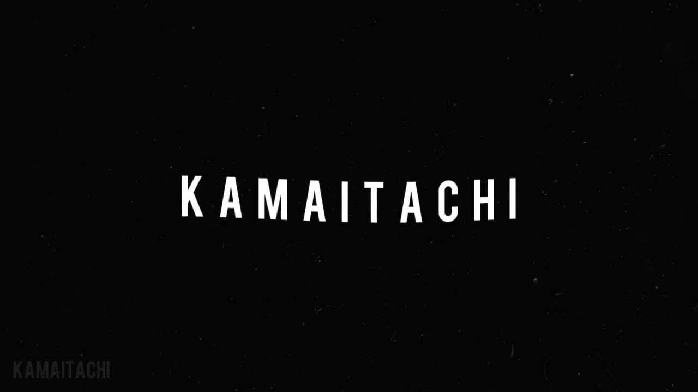

Sobre o Cantor:
'Kamaitachi' faz referência a uma entidade japonesa que representa 'o corte causado pelo vento frio' e foi a metáfora escolhida pelo jovem cantor de 23 anos para representar o que ele deseja que sua arte seja na vida das pessoas: algo com um impacto sutil, mas duradouro.
| Morgana |
| Cabelos Arco-Íris |
| O Limbo do Menino Sem Olhos |
| Cachecol |